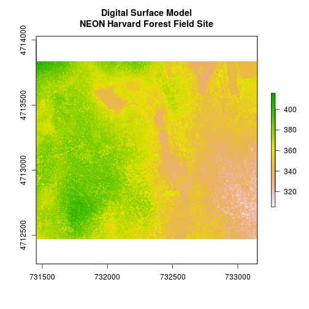
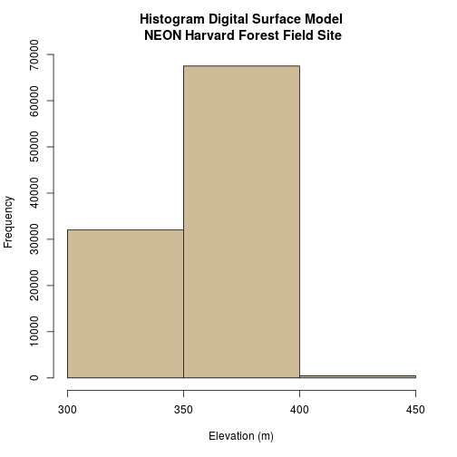
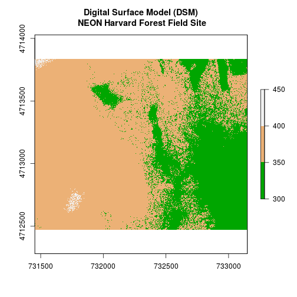
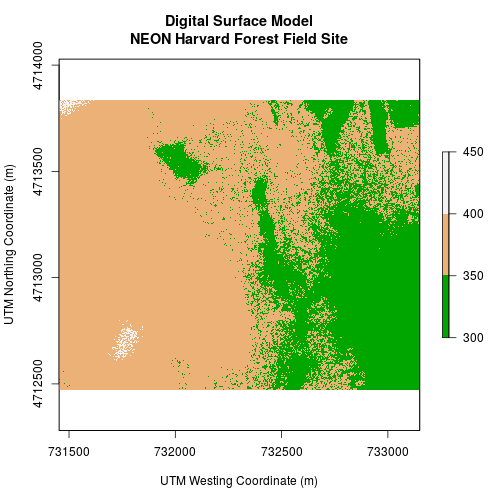
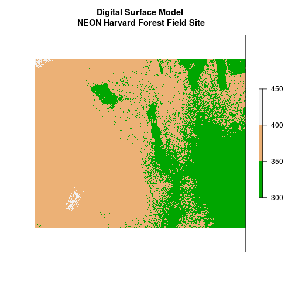
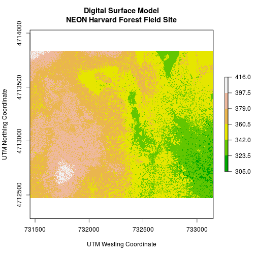
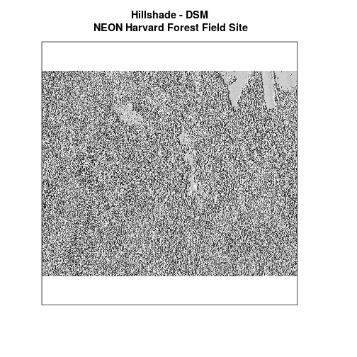
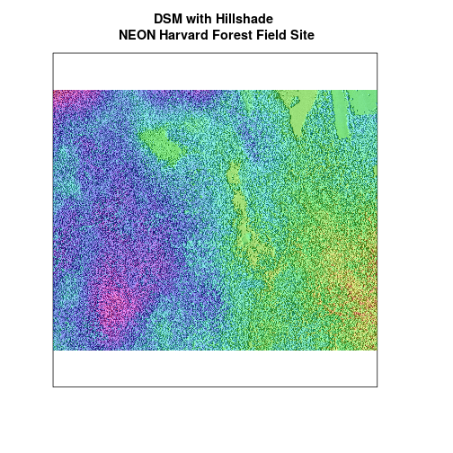
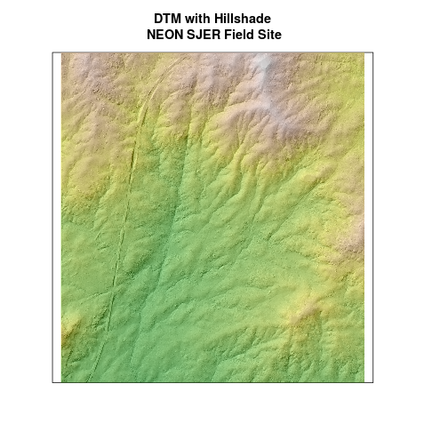

Plot Raster Data in R
Authors
Leah A. Wasser, Megan A. Jones, Zack Brym, Kristina Riemer, Jason Williams, Jeff Hollister, Mike Smorul, Joseph Stachelek
Overview
Teaching: 10 min
Exercises: 0 minQuestions
Know how to plot a single band raster in
R.Know how to layer a raster dataset on top of a hillshade to create an elegant basemap.
Things You’ll Need To Complete This Tutorial
R Skill Level: Intermediate - you’ve got the basics of
Rdown.You will need the most current version of
Rand, preferably,RStudioloaded on your computer to complete this tutorial.Install R Packages
- raster:
install.packages("raster")rgdal:
install.packages("rgdal")- More on Packages in R - Adapted from Software Carpentry.
Download Data
Reference
This tutorial reviews how to plot a raster in R using the plot()
function. It also covers how to layer a raster on top of a hillshade to produce
an eloquent map.
Plot Raster Data in R
In this tutorial, we will plot the Digital Surface Model (DSM) raster
for the NEON Harvard Forest Field Site. We will use the hist() function as a
tool to explore raster values. And render categorical plots, using the breaks argument to get bins that are meaningful representations of our data.
We will use the raster and rgdal packages in this tutorial. If you do not
have the DSM_HARV object from the
Intro To Raster In R tutorial,
please create it now.
# if they are not already loaded
library(rgdal)
Loading required package: sp
rgdal: version: 1.2-8, (SVN revision 663)
Geospatial Data Abstraction Library extensions to R successfully loaded
Loaded GDAL runtime: GDAL 2.2.1, released 2017/06/23
Path to GDAL shared files: /usr/share/gdal/2.2
Loaded PROJ.4 runtime: Rel. 4.9.2, 08 September 2015, [PJ_VERSION: 492]
Path to PROJ.4 shared files: (autodetected)
Linking to sp version: 1.2-5
library(raster)
# set working directory to ensure R can find the file we wish to import
# setwd("working-dir-path-here")
# import raster
DSM_HARV <- raster("data/NEON-DS-Airborne-Remote-Sensing/HARV/DSM/HARV_dsmCrop.tif")
First, let’s plot our Digital Surface Model object (DSM_HARV) using the
plot() function. We add a title using the argument main = "title".
# Plot raster object
plot(DSM_HARV,
main = "Digital Surface Model\nNEON Harvard Forest Field Site")

Plotting Data Using Breaks
We can view our data “symbolized” or colored according to ranges of values
rather than using a continuous color ramp. This is comparable to a “classified”
map. However, to assign breaks, it is useful to first explore the distribution
of the data using a histogram. The breaks argument in the hist() function
tells R to use fewer or more breaks or bins.
If we name the histogram, we can also view counts for each bin and assigned break values.
# Plot distribution of raster values
DSMhist <- hist(DSM_HARV,
breaks = 3,
main = "Histogram Digital Surface Model\n NEON Harvard Forest Field Site",
col = "wheat3", # changes bin color
xlab = "Elevation (m)") # label the x-axis
Warning in .hist1(x, maxpixels = maxpixels, main = main, plot = plot, ...):
4% of the raster cells were used. 100000 values used.

# Where are breaks and how many pixels in each category?
DSMhist$breaks
[1] 300 350 400 450
DSMhist$counts
[1] 32041 67502 457
Warning message!? Remember, the default for the histogram is to include only a subset of 100,000 values. We could force it to show all the pixel values or we can use the histogram as is and figure that the sample of 100,000 values represents our data well.
Looking at our histogram, R has binned out the data as follows:
- 300-350m, 350-400m, 400-450m
We can determine that most of the pixel values fall in the 350-400m range with a few pixels falling in the lower and higher range. We could specify different breaks, if we wished to have a different distribution of pixels in each bin.
We can use those bins to plot our raster data. We will use the
terrain.colors() function to create a palette of 3 colors to use in our plot.
The breaks argument allows us to add breaks. To specify where the breaks
occur, we use the following syntax: breaks=c(value1, value2, value3).
We can include as few or many breaks as we’d like.
# plot using breaks.
plot(DSM_HARV,
breaks = c(300, 350, 400, 450),
col = terrain.colors(3),
main = "Digital Surface Model (DSM)\n NEON Harvard Forest Field Site")

Data Tip
Note that when we assign break values a set of 4 values will result in 3 bins of data.
Format Plot
If we need to create multiple plots using the same color palette, we can create
an R object (myCol) for the set of colors that we want to use. We can then
quickly change the palette across all plots by simply modifying the myCol
object.
We can label the x- and y-axes of our plot too using xlab and ylab.
# Assign color to a object for repeat use/ ease of changing
myCol <- terrain.colors(3)
# Add axis labels
plot(DSM_HARV,
breaks = c(300, 350, 400, 450),
col = myCol,
main = "Digital Surface Model\nNEON Harvard Forest Field Site",
xlab = "UTM Westing Coordinate (m)",
ylab = "UTM Northing Coordinate (m)")

Or we can also turn off the axes altogether.
# or we can turn off the axis altogether
plot(DSM_HARV,
breaks = c(300, 350, 400, 450),
col = myCol,
main = "Digital Surface Model\n NEON Harvard Forest Field Site",
axes = FALSE)

Challenge: Plot Using Custom Breaks
Create a plot of the Harvard Forest Digital Surface Model (DSM) that has:
- Six classified ranges of values (break points) that are evenly divided among the range of pixel values.
- Axis labels
- A plot title
Answers
An object of class ".SingleLayerData" Slot "values": logical(0) Slot "offset": [1] 0 Slot "gain": [1] 1 Slot "inmemory": [1] FALSE Slot "fromdisk": [1] TRUE Slot "isfactor": [1] FALSE Slot "attributes": list() Slot "haveminmax": [1] TRUE Slot "min": [1] 305.07 Slot "max": [1] 416.07 Slot "band": [1] 1 Slot "unit": [1] "" Slot "names": [1] "HARV_dsmCrop"[1] 18.5
Layering Rasters
We can layer a raster on top of a hillshade raster for the same area, and use a transparency factor to created a 3-dimensional shaded effect. A hillshade is a raster that maps the shadows and texture that you would see from above when viewing terrain.
# import DSM hillshade
DSM_hill_HARV <-
raster("data/NEON-DS-Airborne-Remote-Sensing/HARV/DSM/HARV_DSMhill.tif")
# plot hillshade using a grayscale color ramp that looks like shadows.
plot(DSM_hill_HARV,
col = grey(1:100/100), # create a color ramp of grey colors
legend = FALSE,
main = "Hillshade - DSM\n NEON Harvard Forest Field Site",
axes = FALSE)

Data Tip
Turn off, or hide, the legend on a plot using
legend=FALSE.
We can layer another raster on top of our hillshade using by using add = TRUE.
Let’s overlay DSM_HARV on top of the hill_HARV.
# plot hillshade using a grayscale color ramp that looks like shadows.
plot(DSM_hill_HARV,
col = grey(1:100/100), #create a color ramp of grey colors
legend = FALSE,
main = "DSM with Hillshade \n NEON Harvard Forest Field Site",
axes = FALSE)
# add the DSM on top of the hillshade
plot(DSM_HARV,
col = rainbow(100),
alpha = 0.4,
add = T,
legend = F)

The alpha value determines how transparent the colors will be (0 being
transparent, 1 being opaque). Note that here we used the color palette
rainbow() instead of terrain.color().
- More information in the
Rcolor palettes documentation.
Challenge: Create DTM & DSM for SJER
Use the files in the
NEON_RemoteSensing/SJER/directory to create a Digital Terrain Model map and Digital Surface Model map of the San Joaquin Experimental Range field site.Make sure to:
- include hillshade in the maps,
- label axes on the DSM map and exclude them from the DTM map,
- a title for the maps,
- experiment with various alpha values and color palettes to represent the data.
Answers
# CREATE DSM MAPS # import DSM DSM_SJER <- raster("data/NEON-DS-Airborne-Remote-Sensing/SJER/DSM/SJER_dsmCrop.tif") # import DSM hillshade DSM_hill_SJER <- raster("data/NEON-DS-Airborne-Remote-Sensing/SJER/DSM/SJER_dsmHill.tif") # plot hillshade using a grayscale color ramp that looks like shadows. plot(DSM_hill_SJER, col = grey(1:100/100), #create a color ramp of grey colors legend = FALSE, main = "DSM with Hillshade\n NEON SJER Field Site", axes = FALSE) # add the DSM on top of the hillshade plot(DSM_SJER, col = terrain.colors(100), alpha = 0.7, add = TRUE, legend = FALSE)
# CREATE SJER DTM MAP # import DTM DTM_SJER <- raster("data/NEON-DS-Airborne-Remote-Sensing/SJER/DTM/SJER_dtmCrop.tif") # import DTM hillshade DTM_hill_SJER <- raster("data/NEON-DS-Airborne-Remote-Sensing/SJER/DTM/SJER_dtmHill.tif") # plot hillshade using a grayscale color ramp that looks like shadows. plot(DTM_hill_SJER, col = grey(1:100/100), #create a color ramp of grey colors legend = FALSE, main = "DTM with Hillshade\n NEON SJER Field Site", axes = FALSE) # add the DSM on top of the hillshade plot(DTM_SJER, col = terrain.colors(100), alpha = 0.4, add = TRUE, legend = FALSE)

Key Points